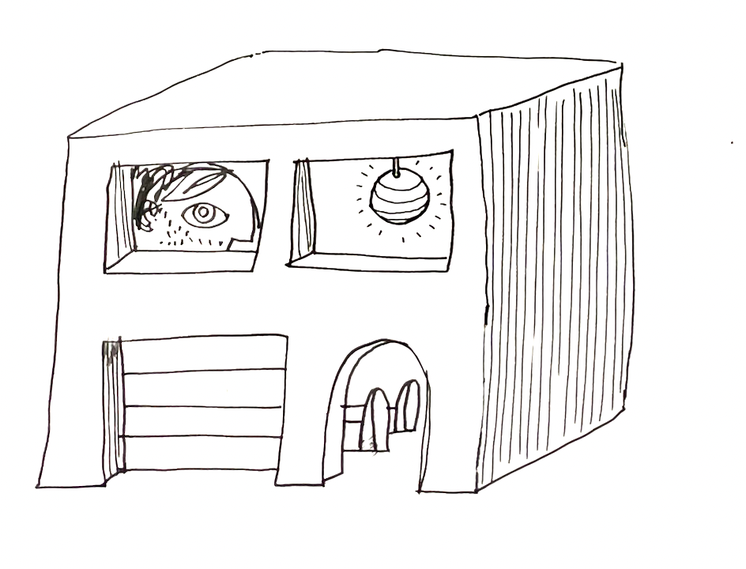

==Still a draft, not ready for general circulation.==
 Thanks to many comments, esp. Ravi Iyer, Sahar Massachi, Tal Yarkoni, Rafael Burde, Grady Ward, Ines Moreno de Barreda, and Daniel Quigley.
Summary
It is difficult to anticipate the effect of AI on online communication. AI models have already had big effects on content moderation but they are now starting to have effects on content production, e.g. through generating synthetic spam and deepfakes. How is the balance likely to play out?
This note surveys what we know about the likely effect of AI on online communication, summarized with a set of predictions:
- The prevalence of policy-violating content on platforms will decline. Classifiers are approaching human-level performance and so the prevalence of policy-violating content (e.g. nudity, hate speech) should decline to very low rates. The same argument applies to censorship: governments will be able to near-perfectly identify messages that include a forbidden sentiment.
- The prevalence of “context-specific” violating content will increase. This refers to content which appears to be non-violating to the average person but is interpreted in a policy-violating way by its intended audience.
- The prevalence of variations of known-violating content will decrease. Content that is a match against databases of illegal sexual media (PhotoDNA), IP-protected content (ContentID), or terrorist recruitment content (GIFCT) will become less frequent because AI will make obfuscation harder.
- Platforms will not be able to identify bots from their behavior. Behavioral tests like CAPTCHAs will become ineffective against sophisticated actors and so platforms will have to rely relatively more on direct proofs of identity.
- People will not be able to discriminate between real and fake media based only on the content. Since the invention of audio and visual recording in the 19th century the existence of a recording has been evidence for the event depicted having occurred. The evidentiary value of media will become much less strong because it will be impossible for a human to discriminate between real and fake.
- Platforms will not be able to discriminate between real and fake media based only on the content. It is unlikely that AI classifiers will be able to reliably detect AI-manipulated media.
- Fake media will not have a substantial influence on politics. Forged documents have circulated for thousands of years but generally with a limited influence on politics because documents have always been evaluted not just on their content but their provenance. Advances in forgery technology seem likely to be accompanied by advances in skepticism, and greater reliance on provenance.
- Computer-generated content will not be hyper-persuasive. LLMs are unlikely to allow substantial advances in the ability to manipulate public opinion. Social scientists have warned about “hyper persuasive” technologies for a century and been wrong every time.
- Communication will migrate further towards large closed platforms. The rise of synthetic content will make it harder for individuals to discriminate between reliable and unreliable information sources, and so likely to increase the demand for intermediaries, which implies greater demand for verification and closed platforms.
- Things will get weird. Our intuitions about meaning and interpretation are based on experience with human-created representations. When computers can generate representations then strange things are likely to happen.
I also sketch a broader theory of the effect of AI on communication. The most important distinction is between properties of a message that are “internal” and “external”. - An “internal” property of a message is a function solely of the content, e.g. whether an image contains nudity, whether text contains hate speech, whether a joke is funny. AI classifiers are rapidly approaching human-level accuracy for these properties and this means that platforms (and governments) will be able to near-perfectly filter out content that violates their rules, even when content-producers have access to the same technology. - An “external” property of a message depends on some fact outside the message’s content: e.g. whether an image was computer-generated, whether a headline is true, whether a message came from a specific person. Platforms will get better at predicting external properties but they will be outpaced by motivated actors who can manipulate their fakes until they become indistinguishable from genuine articles, and able to manipulate lies so they’re indistinguishable from the truth.
This note additionally has short appendices on the history of forged documents and on relevant forecasting questions from Metaculus.
What I don’t talk about. Two very important topics that I do not discuss here: (1) super-intelligent AI and alignment; (2) social and cultural biases in AI.
Predictions
Background on AI. Before discussing the predictions I note a couple of facts about recent progress in computer abilities:
- Since the mid 20th century computers have been much better than humans at performing routine calculations.
- Over the last 50 years computers have been steadily getting better at recognizing text and images, with particularly rapid progress since around 2012. Today computers can out-perform the average humans on many classification tasks.
- Since around 2018 computers have additionally become good at synthesizing media, e.g. creating text, images, or video, to match a description.

The graph above from Kiela et al. (2023) shows the very recent history of computer performance: AI systems are regularly achieving human performance on benchmark tasks within a year of them being introduced, and so new benchmarks are being introduced more frequently.

The Prevalence of Policy-Violating Content Will Decline
All large internet platforms use automated systems to detect policy-violating content. All major platforms ban or suppress various types of content, e.g. hate speech, incitement to violence, nudity, graphic content. It is not economical to have human moderation of every message and so automated systems have always been used. Early systems simply checked for the appearance of prohibited words or matched against media databases, later systems used classifiers trained on human labels.
Simple classifiers often have high accuracy. Toxicity in text can be fairly well detected by identifying highly diagnostic phrases, however they have false positives (Chen (2022)) and false negatives (Heiner (2022)) which are easily spotted by humans.
Simple classifiers are easily evaded. - Han and Tsvetkov (2020) note that simple models are poor at detecting “veiled toxicity” which they define as including “codewords, novel forms of offense, and subtle and often unintentional manifestations of social bias such as microaggressions and condescension.” - A. Lees et al. (2021) note that simple models are poor at detecting “covert toxicity” which includes “types of toxicity that may not be immediately obvious. Covertly toxic comments may use obfuscation, code words, suggestive emojis, dark humor, or sarcasm …[and] [m]icroaggressions.” Both papers train models to identify toxicity where the ground truth is human rating of the text alone, without additional information on context or audience.] - Gröndahl et al. (2018) note that hate speech detectors can easily be fooled if you “insert typos, change word boundaries or add innocuous words.”
Recent classifiers have performance that meets or exceeds human levels. Google’s 2022 generation of text moderation models, which use transformer-based LLMs, are able to correctly classify many difficult cases (A. W. Lees et al. (2022)).[^employment] OpenAI say “Labeling quality by GPT-4 is similar to human moderators with light training … [h]owever, both are still overperformed by experienced, well-trained human moderators.” (Weng, Goel, and Vallone (2023)).1
1 Arnaud Norman writes about how algorithms to scrape email addresses are often easy to evade, by adding special characters or other obfuscations, but that ChatGPT can straight-forwardly decode most such obfuscations.
Prevalence of policy-violating content has declined dramatically. I think much of this decline can be attributed to improvements in the quality of classifiers. Meta reports that the prevalence of nudity, bullying, hate speech, and graphic content each declined by a factor of between 2 and 5 between 2017 and 2022, and that the share of identified-violating content that was first identified by an ML model (“proactive rate”) is approaching 100% for most categories.2
2 It is important to remember that the “proactive rate” is the share of detected content that is detected by AI, the share of violating content that is detected by AI will certainly be significantly lower but is not generally reported. See Meta’s Community Standards report and my visualization of this data. It’s also worth noting that Mark Zuckerberg made a series of predictions that human raters could be substituted with AI, which I think has turned out to be largely correct despite widespread skepticism (including by me), e.g. in late 2018 he said “through the end of 2019, we expect to have trained our systems to proactively detect the vast majority of problematic content.”

Content producers have limited ability to use AI models to obsfucate. If a content-producer had access to the classifier used by the platform then they could keep testing different variants of a violating post until they found a variant that was not identified as violating, i.e. finding a false negative. However as the platform’s model becomes more accurate the task becomes more difficult for the adversary, as false positives will be rarer, thus the balance of power shifts in favor of the platform. Below I give a more formal argument for this (“Venn diagram model”).
Employment of human moderators will likely decline. As computer accuracy improves fewer messages will need to be escalated for human review. Additionally fewer humans will be needed to label training data: A. W. Lees et al. (2022) and Weng, Goel, and Vallone (2023) describe LLM classifiers that perform well simply by being given the text of the policy, optionally with a small set of positive and negative examples (i.e. “zero shot” or “few shot”).
This prediction also applies to government censorship. Governments which use simple word-matching to detect anti-government language can be circumvented by using indirect language. Better AI will allow governments to classify every post with reliability as high as if they had a human read each one, and so indirect language or obfuscation will no longer be an effective workaround for censorship.
This prediction would fail if there were substantial limits on the performance of AI. If there were ways of obfuscating content so that a human would recognize it but no AI could recognize it then . It seems plausible that AI systems will remain less flexible than humans in understanding for a long time but, because they are trained on enormous quantities of data, if they miss a subclass of violating content in the short-run they would be able to quickly learn to identify it from fresh human-labeled data.
Whether prevalence will decline all the way to zero depends on the definition of prevalence used. An AI model can never perfectly predict human-rater evaluation because humans are themselves noisy: there is both between-rater variation and within-rater variation in labelling for any given piece of content. Thus whenever the ground truth is human judgment then even an infallible classifier could not be used to drive prevalence all the way to zero.
The Prevalence of Context-Specific Violations Will Increase
Some messages have a violating significance only to their intended audience. We can define a message as violating in one of two ways: (1) has a violating significance to the average person (average citizen or average user), or (2) has a violating significance to the intended audience of that message.[^definition]
Many messages use contextual violations.3
3 A related phenomena is people using selective truths to give an impression that is false. E.g. it is common for anti-vaccination groups to refrain from posting provably false claims and instead post only those true claims which reflect badly on vaccines. People with a bias against some ethnic group likewise often refrain from posting provably false claims but post only those true claims that reflect badly on the hated group. Because the pool of true claims is enormous it is easy to collect a large set of true claims that collectively give a false impression.
- Saying “globalist” when your audience understands it to mean “jewish”
- Saying the opposite of what is meant, e.g. a bigot saying excessively positive things about an ethnic group, or a pro-anorexia poster making anti-anorexic statements sarcastically.
- Using euphemisms for illegal substances or illegal acts.
- Using emojis of eggplants and peaches with sexual connotations.
- Using photos without explicit nudity but which can be read as pornographic.
Improved detection of violations is likely to cause substitution towards contextual violations. As AI improves the ability to detect violations it seems likely that there will be at least some substitution towards context-specific violations, however as long as there is some cost then we would expect a less than one-for-one substitution.
Platforms could detect contextual violations if they wanted to. When doing human evaluation then platforms could either (1) provide human raters with detail about the message’s context and audience, or (2) assign human raters to messages based on their experience with that community.4 Likewise AI models could be trained to include rich representation of the context. An additional advantage of adding context is that it can identify and exempt posts that violate the letter but not the spirit of the policy.
4 Platforms already have some policies that include context, e.g. Facebook’s “Bullying and Harassment policy” bans “repeatedly contacting someone in a manner that is unwanted or sexually harassing.”
Platforms may not want to remove contextual violations. There are reasons why platforms may be reluctant to use context in determining violations: it is more complex, and can lead to awkward PR where the platform is shown to be censoring apparently harmless words and images. Additionally platforms may care more about being seen to restrict harmful content than about the actual harm prevented.
Contextual violations have long existed in broadcast media. There have been many cases where contextual violations have been tolerated: e.g. newspapers would allow classified advertisments for prostitutes if described as masseuses, vibrators if described as massage wands, contraception if described as marital aids, and abortion if described as “removal of obstructions”. Thus it seems plausible that platforms will tolerate a substantial amount of contextually-violating content to remain.5
5 In Facebook’s Marketplace it is prohibited to list guns for sale. As a consequence people began to list gun cases, with the understanding that a case was standing in for a gun. Facebook then updated their policy to prohibit selling gun cases. In turn people began to list gun stickers as stand-ins for guns. See WSJ reports from 2020 and 2021.
Government censorship is unlikely to be constrained by context-specific violations. Once a censor discovers that a term has an anti-government significance in a certain context then they are likely to start censoring that term. E.g. China has suppressed online mentions of Winnie the Pooh because it is associated with criticism of Xi Jinping, and in 2022 Hong Kong police arrested protestors for holding blank pieces of paper.6
6 https://www.axios.com/2022/11/28/china-protests-blank-paper-covid
The Prevalence of Variants of Known-Violating Content Will Decline
Platforms check content against databases of known-violating content. In addition to running classifiers on content, platforms also check content against databases of known-violating content. The databases are often shared across platforms (“signal sharing”), e.g. databases of illegal sexual media (PhotoDNA), IP-protected content (Content ID), or terrorist recruitment content (GIFCT).7 As a consequence sophisticated uploaders will obfuscate their content, e.g. by adding noise, and platforms expand their matching algorithms using fuzzy matching.
7 other “signal sharing” programs: NCMEC, StopNCII, ThreatExchange.
Improvements to AI will help platforms relatively more. As I argue in the model below: as AI recognition approaches a human level it will be difficult to upload a recognizable variant of a known piece of violating content without the platform automatically labelling it as such.
Platforms Will Not Be Able to Identify Bots from Their Behavior
Most online platforms struggle with automated users who are disruptive in a variety of ways. One way of protecting against bots is with behavioral tests, e.g. a CAPTCHA test asking users an image-recognition task8, or by using on-platform behavior to detect whether a user is human. However improvements in AI mean that computers have human-level performance on image-recognition tasks, and can learn to imitate human-style behavior patterns, thus it seems likely these behavioral tests will become ineffective against sophisticated actors. Searles et al. (2023) finds that most contemporary types of CAPTCHAs can be solved by bots with higher than human accuracy (p10).9
8 CAPTCHA stands for Completely Automated Public Turing test to tell Computers and Humans Apart.
9 Similarly behavioural fingerprinting will become ineffective against advanced actors, e.g. using voice recognition to verify identity.
This does not imply that the prevalence of bots will increase. All platforms need some defense against bots so they will have to rely relatively more on other forms of authentication, such as monetary payment, offline identity credentials (government ID, credit card number), hard-to-fake metadata (unique IP address, device ID), or 3rd-party identity provider (Sign in with Google, OpenID).10 Thus the barriers to signing up for a service, and especially posting on it, will become higher.
10 The 3rd-party identity providers will themselves have to rely on some other ground truth when accepting signups.
Platforms Will Find It Hard to Discriminate between Real and Fake Media
In some cases the ground truth depends on properties outside the content. For example:
- Whether some media (audio, photo, video) has been manipulated or synthesized.
- Whether text was written by a human or a computer.
- Whether text was written by a specific person.
I will refer to these properties as “external” in contrast to “internal” properties which depend only on the content, such as whether a picture depicts nudity.
Advances in AI help with both forgery-detection and forgery-creation. It is clear that a better statistical model of genuine artefacts will help detect forgeries, but also help create convincing forgeries.
Determined forgers will be able to . It seems likely that the latter effect will dominate: it will gradually become possible to camouflage computer-generated content such that neither a computer nor a human could tell them apart. If the content-producer has access to the platforms’ model then they can keep perturbing their fake media until it is labelled as non-fake.
We cannot reliably discriminate between real and AI-generated media. As of late 2023, programs to detect synthetically generated media have relatively poor accuracy: OpenAI announced a model to detect LLM-created text in January 2023 shut it down in July because of poor performance. In June 2023 the NY Times compared a variety of tools to detect computer-generated images and found that with minimal effort they could all be reliably fooled.
The prevalence of synthetic media will increase on unmoderated platforms. The major platforms have strong reason to reduce the spread of fake media11, and can control it with indirect means, e.g. Meta and YouTube dramatically decreased the prevalence of misinformation over 2016-2020 not primarily through better detection of whether a claim is false, but by a host of indirect measures. Thus I do not expect overall prevalence of fake factual media to substantially increase on the major platforms.
11 The goals of platforms in content moderation are discussed in my note on ranking, Cunningham (2023).
Fake Media (Deepfakes) Will Not Have a Substantial Influence on Politics
As synthetic media becomes common people will rely more on provenance. As it becomes cheaper to manipulate and synthesize media then people are likely to become more skeptical and rely relatively more on the provenance of information. Thus although synthetic media will likely circulate I do not think it will have a substantial influence on beliefs in equilibrium.
It has always been easy to create misleading documents.It is not difficult to forge or alter documents, or edit video in a misleading way. As a consequence mainstream media organizations typically do not publish leaked materials unless they have either a chain or provenance for the leaks or independent confirmation of their content.
Influential forgeries of documents have been historically rare. Over the past 25 years I estimate perhaps 10% of all influential leaks were based on forged materials.1213
12 I know of two forged documents that were widely taken as true in the last 25 years, from around 15 substantial leaks that I could find: (1) the “yellowcake” letters from Iraq to Niger, cited in the 2002 US case for war against Iraq; (2) a fake G W Bush military transcript reported on by CBS and Dan Rather in 2004. It’s notable both that these cases are somewhat rare, and that each was passed through a chain of apparently reputable parties.
13 This argument implies that, prior to AI, anonymously leaked video would be more likely to be published and circulated than anonymously leaked documents, because video is harder to fake. In fact I cannot think of many cases of influential anonymous leaks of videos. When Trump’s “Access Hollywood” tape was leaked to the Washington Post they got confirmation before publishing it. In fact maybe leaked video has always been untrustworthy because it has always been easy to make deceptive edits.
The quantity of false claims circulating on the internet is not primarily constrained by the quality of their content.A great deal of false claims already circulate on the internet, especially in loosely moderated parts: e.g. by email, on Telegram, 4chan, Truth Social, WhatsApp, Twitter. It’s not clear that the quality of the faked media is an important constraint on the volume that circulates. It’s not uncommon to find a clip of an interview with a politician edited to make it appear that they are admitting to a crime or secret agenda.14 If people already take what they see at face value then adding deepfakes seems unlikely to change their opinions substantially. Alternatively if people are skeptical and look for corroborating sources then, again, deepfakes would be unpersuasive. It seems that deepfakes would only be influential if there are a significant population who are exposed to many lies but are not persuaded because the documentary evidence is not sufficiently strong.
14 Snopes.com has an enormous database of both false claims and misleadingly manipulated media that has circulated since 1994. A typical recent example is an edit of a Bill Gates interview to make it appear he wants to use vaccination to reduce population growth.
Communication Will Migrate Towards Large Closed Platforms
Small platforms will be overrun with AI-created content. In particular, AI-created bots, spam, obfuscated violating content, and fake media. This would imply that consumers will tend to migrate to larger closed platforms with more effective defences, and which have more restriction on participation. This continues a general movement over the last 20 years of communication moving from small open platforms (independent email, small forums, mailing lists, independent websites) to large closed platforms (large email providers, large social media platforms).
People will rely more on established sources of truth. E.g. they will rely relatively more on Wikipedia, Community Notes, and mainstream recognized media sources. The ordinary content-based signs of trustworthiness will become less reliable: having a professional website, well-edited text, well-argued reasoning, and documentary evidence.
People will rely more on cryptographic signing to verify authenticity. I am note sure how strong this effect will be: it is generally more efficient for an intermediary to verify authenticity of senders (AKA filter out frauds) than for users to do it themselves. I think we’ve seen that in other domains: (1) PGP signing of email has been less important than email providers filtering spam and phishing; (2) SSL certificates in browsers have been less important than browsers giving warnings for suspected phishing sites (e.g. Google’s safe browsing database of sites with phishing or malware is used to give warnings in Chrome and Safari).
Entertainment will Become Largely Synthetic
A classifier that can detect whether a photo is pretty can also generate a synthetic photo that is pretty, and a classifier that can detect whether a joke is funny should also be able to generate funny jokes.15 On average people spend around 3 hours per day watching entertainment (TV, YouTube, TikTok, Instagram). It seems likely that trained models will be able to synthesize content that is highly engaging though it’s hard to anticipate what it will look like.
15 I think language models haven’t yet been very good at jokes because they generate one word at a time (autoregressive), while jokes typically have a logical structure such that the setup is probable given the punchline, but not the other way around. When we get language models which generate text using different statistical algorithms (e.g. diffusion instead of autoregressive generation) then it seems likely they’ll be able to create good jokes.
Things Will Get Weird
Much of our common-sense understanding of media will be violated when we routinely use AI models to manipulate and synthesize artefacts. Some examples:
People will synthesize completely new violating images/videos. Thiel, Stroebel, and Portnoff (2023) say that, as of early 2023, less than 1% of child sexual abuse media (CSAM) appears to be synthetically generated. However the ability to synthesize has been advancing rapidly, “to the point that some images are only distinguishable from reality if the viewer is very familiar with photography, lighting and the characteristics of diffusion model outputs … it is likely that in under a year it will become significantly easier to generate adult images that are indistinguishable from actual images.”
Producers will synthesize content to sit on the edge of a category. If platforms take action whenever content passes some threshold then adversarial actors will generate or perturb content such that it sits right below the threshold. If a platform removes a photo whenever more than 50% of raters would say it depicts nudity then producers would upload photos which 49% of raters would say depicts nudity. People would upload movies which almost look like an existing IP-protected movie, and students might submit essays that are close to existing sources but don’t quite trigger the plagiarism detector.
Appendix: Historical Observations on Forgeries
Influential leaks of political documents since 1997:
| Tripp Tapes | 1997 | audio | Linda Tripp to Kenneth Starr |
| [FORGERY] Iraq letters to Niger (“yellowcake”) | 2002 | documents | Unknown to Italian intelligence to CIA |
| [FORGERY] Bush military transcripts (“Killian”) | 2004 | fax of 1970s memo | Unknown to retired colonel to Dan Rather / CBS |
| Abu Ghraib photos | 2004 | photos | Unkown to CBS |
| Baghdad Airstrike (“Collateral Murder”) | 2007 | video | Chelsea Manning to Wikileaks |
| US Iraq war logs | 2010 | digital docs | Chelsea Manning to Wikileaks |
| US Diplomatic cables | 2010 | digital docs | Chelsea Manning to Wikileaks |
| Romney Fundraiser Tape (“47%”) | 2012 | audio | Bartender to Mother Jones |
| NSA Surveillance Leaks | 2013 | digital docs | Edward Snowden to the Guardian, WaPo |
| DNC emails | 2016 | emails | Unknown to Wikileaks |
| Podesta emails | 2016 | emails | Unknown to Wikileaks |
| Colin Powell emails | 2016 | emails | Unknown to DCLeaks |
| Panama papers | 2016 | documents | Unknown to Süddeutsche Zeitung |
| Donald Trump Access Hollywood Tape | 2016 | video | Unknown to Washington Post |
| [MIXED] Macron emails | 2017 | emails | Unknown to Pastebin |
| China Cables | 2019 | digital docs | Unknown to the ICIJ |
| Hunter Biden laptop | 2020 | docs,audio,video | computer shop to Giuliani to NY Post |
| Los Angeles Council call (“changuito”) | 2022 | audio | Unknown to Reddit to LA Times |
Why are forgeries not more common? I can think of three possible reasons:
- It’s difficult to forge credible documents – e.g. even a simple memo is hard to fake because there are lots of small details like the letterforms and formatting and jargon used.
- It’s easy to forge credible documents but intelligence agencies and the media won’t believe them without independent confirmation.
- It’s easy to forge credible documents and for them to get coverage but not many people are motivated to try.
Older examples of influential forgeries.
| Mark Antony’s will | 33BC | read out by Octavian in the senate (disputed whether forgery) |
| Dreyfus letters sharing military info w Germany | 1894 | fabricated by French military |
| Protocols of Elders of Zion (Jewish plans for domination) | 1903 | |
| Castle Document, letter to British govt in Dublin | 1916 | unclear source, contributed to 1916 Easter rising |
| Zinoviev letter from Russia to UK Labour party | 1924 | unclear source |
| Tanaka Memorial (Japanese plans for world domination) | 1929 | unclear source |
Notes.
The Macron email leaks seemed to include both real and fake content (ref). In fact one report says that Macron’s team sent each other outrageous implausible emails as a pre-emptive defense to make any subsequent leaks seem less credible (ref).
The Steele dossier isn’t really a forgery: it doesn’t purport to have a different author than its true author. The problem with the dossier is that the author makes knowingly false claims of fact. This .
Appendix: Model of AI and Internal Properties (Venn Model)
In short: improvements in AI are likely to reduce overall prevalence of violating content on platforms.
Better models will help both sides in this war: they will help platforms detect violating content, but they also also help producers camouflage their violating content. I argue below that the net effect will likely be to help platforms, the basic argument is that if both sides had access to a perfect classifier then there would be zero violating content on the platform.16
16 Yann Lecunn made a similar argument in a tweet from June 2023: “AI is part of the solution here, not part of the problem! It is because of progress in natural language understanding in multiple languages (due to self-supervised transformers) that, for example, hate speech can be detected and taken down in hundreds of languages.”. Although I think the wording is misleading by implying that AI being part of the solution precludes it from also being part of the problem. Also worth noting that LeCunn misstates FB’s own statistics: he says “82% of hate speech is taken down automatically by AI before anyone sees it.” In fact it’s 82% of detected hate speech, and the 82% refers to the share that is actioned before it is reported, not actioned before it is seen. The share of true hate speech detected by AI is necessarily smaller but FB does not report that figure.
Prevalence of violating content has fallen. Overall prevalence of violating content has shrunk dramatically over the past 5-10 years on the major social media platforms, and this can largely be attributed to improvements in classifiers.
Model: a Venn-diagram model of content moderation with classifiers. I describe a game between a platform and a producer, each of whom has access to a classifier. We want to know the effect on total violating content that survives filtering by the platform. Conclusions:
- If a plaform gets a better classifier then less violating content gets through.
- If a producer gets a better classifier then the effect is ambiguous, but probably more violating content will get through. In practice this means producers using an AI model to rephrase text, add noise to photos, or synthesize video, such that the content remains violating but the platform’s classifier does not pick it up.
- If both platform and producer get a better classifier then probably less violating content will get through.
- A lot of content will sit just on the threshold for getting filtered.
Model
The diagram below illustrates three sets of posts: 17
17 I’m assuming that the universe is all possible posts, e.g. all possible strings of text, or sets of pixels. Then sets \(V\) and \(\hat{V}\) and \(M\) will be enormous, but the actually existing posts are only a tiny tiny fraction of the set of possible posts. When calculating prevalence we use cardinality of these sets, implying (1) posts are drawn uniformly from the sets, and (2) there are no identical posts, i.e. each post is drawn at most 1 time.
- \(V\): posts that are violating – according to expert human raters. I’m concentrating on “self-contained” rules, e.g. nudity, hate speech, holocaust denial, where the violation depends only on the direct content of the post. I’m not considering categories like misinformation, deepfakes, or spam where violation depends on whether the content is true, or the provenance of the content.
- \(\hat{V}\): posts that are classified as violating – by the platform’s classifier, can parameterize with a threshold (\(\hat{V}(k)\)). The red segments below represent the false positives and false negatives of the classifier:
- \(M\): posts that the producer wants to send – i.e., posts that express their message, \(M\). We can classify some producers as “good” (only wants to send non-violating \(M\cap V=\varnothing\)), or as bad (only want to send violating \(M\cap V=M\)).
Implications of this Model
Suppose that we remove all detected violating posts (i.e. \(\hat{V}\)). In the case illustrated above the posts removed (\(M\cap\hat{V}\)) would be the majority of the producer’s posts, and of those that remain only a small share are violating. We can make a few observations given this setup:
Improvements to the platform’s classifier will reduce prevalence of violating content. If we hold fixed the producer’s production, then as the classifier \(\hat{V}\) gets closer to \(V\) we should generally expect fewer false-positives and fewer false-negatives, so overall a better outcome for the platform (there are cases where this wouldn’t happen but they seem unusual.)
Improvements to producer’s classifier will probably increase prevalence of violating content. Suppose that producers have their own estimate of the platform’s classifier, \(\tilde{V}\), and they will produce posts uniformly from the set they believe will not be removed, i.e. from the set \(M \backslash \tilde{V}\). If the producer learns the true classifier \(\tilde{V}=\hat{V}\) then they will reduce their rate of deleted posts, which is good for the producer, but the effect on the platform can be ambiguous:
- For good producers: For producer who do not wish to produce violating content (\(M\cap V=\varnothing\)) knowledge of the classifier will prevent them from producing false positives, and they will produce more true negatives, which is good for the platform.
- For bad producers: For producers who only want to produce violating content (\(M\cap V=M\)) they will increase their rate of violating but non-detected posts (false negatives), which is bad for the platform.
- For neutral producers: For neutral producers (where \(M\) is neither a subset nor mutually exclusive with being violating), the net effect is ambiguous.
In fact the net effect seems likely to be negative because in most cases people who produce violating content do it on purpose, e.g. those who produce nudity and hate speech and holocaust denial do it intentionally, and they couldn’t achieve their purpose without violating the policy.
What this looks like in practice: tricking classifiers by misspelling words, using roundabout phrasing, inverting colours in a photo, adding noise to a video. Earlier classifiers had difficulty with these manipulations but deep neural nets are much better at recognizing the deep content and are harder to confuse.
Qualification. In the argument above I’m holding fixed the platform’s classifier \(\hat{V}\). However if the producer changes the posts they produce then the performance of that classifier will change, e.g. precision might fall, and so the full effect should include an adjustment to that classifier. Could add an equilibrium condition that the classifier’s threshold \(k\) will be set such that precision will be \(p\) (\(\frac{|\hat{V}(k)\cap V \cap M|}{|\hat{V}(k)\cap M|}=p\)). I don’t think this would change the qualitative conclusion.
Improvements to a classifier used by both platform and producer will lower prevalence of violating content. Suppose both parties used the same classifier (\(\tilde{V}=\hat{V}\)), and that classifier was perfect (\(\tilde{V}=\hat{V}=V\)). Then there will be no violating posts shown: negative producers won’t post anything, and neutral and positive producers will only produce non-violating posts. This argument applies to the limit of having a perfect model, but it seems reasonable to presume that on the path to that limit the rate of violating posts will generally decline.
Content will cluster just below the classifier threshold. So far we have discussed everything in binary terms, thought realistically most things are continuous. If we action posts in a binary manner, e.g. filtering posts with a classifier score above some threshold, then producers will have an incentive to produce posts which are just below the threshold for filtering.
Appendix: Discrimination Model
Q: what happens when it gets easier to manufacture forgeries? We want to know the equilibrium effect on the rate at which people accept both real and fake goods. Of particular interest is the relative effect of deepfake technology on (1) false positives - forgeries believed to be genuine, and (2) false negatives - genuine images believed to be forgeries.
Core prediction: if the current share of fakes is small then the primary effect of deepfakes will be more false positives rather than more false negatives. I.e. people will accept a lot more fake images as true, but they won’t reject many more real images as fakes. I’m not sure how convincing the argument is in reality, but there’s a nice crisp intuition of how it works in the model.

Setup: you get a noisy signal of “genuineness”. After observing the signal you accept the good if \(P(\text{real}|\text{signal})\) is above some probability threshold. We can draw two distributions of signals, and the intersection of the two curves will be the equilibrium threshold assuming that (1) fakes and real are equally likely; (2) the cost of a false positive is equal to the cost of a false negative.

Now let the technology for producing fakes gets better. We model this as a shift to the right in the “quality” curve for fakes:
Implications. Reading off this diagram we can see a number of effects. I think these will all be true as long as the monotone likelihood ratio property holds.
- The threshold gets higher.
- More fakes get accepted (more false positives). A larger share of all fakes will be above the threshold.
- More reals get rejected (more false negatives). A smaller share of genuine items will be above the threshold.
- Consumer welfare is lower. The consumer is accepting more fakes and fewer genuine articles.
Extensions/observations.
- The size of each effect depends on the relative slope of the two distributions. If the distribution of fakes was uniform then, as that distribution moved up, the threshold wouldn’t change at all, and so the equilibrium effect would be entirely an increase in fakes accepted (false positives). If instead the distribution of reals was uniform then the threshold would move up, and so the effect would be entirely a decrease in genuine goods rejected (false negatives).
- If the prevalence of fakes is small then impact will mostly be on false positives. If the prevalence of fakes is small then the threshold will cut the distribution of fakes near the center, but will cut the distribution of reals near the tail. Thus a rightward shift in the distribution of fakes will have a small impact on the threshold.
- If there’s free entry then things will be worse. Suppose that the overall quantity of fakes is increasing in the probability of being accepted, then as the technology to produce fakes gets better then the volume will also get higher. The increase in volume will further increase the threshold. As before the relative effect on FP vs FN will depend on the relative curvature of the two distributions.
- Distribution of fakes will likely be skew. Suppose the forgers can create a bunch of candidate goods, and then measure the quality of each one, and only try to sell goods which exceed the cutoff threshold. Then the distribution of fake goods will be truncated. But this is no longer an equilibrium because all the low-quality goods are now genuine. Need to think this through more.
Appendix: Forecasts from Metaculus
| deadline | Metaculus Jun 30 2023 | |
|---|---|---|
| Will a deepfake cause damage & make front page of a major news source? | 2023 | 89% |
| Will a deepfake be blamed by G20 politician for election loss? | 2025 | 80% |
| Will AI be used in an attack on infrastructure costing >$1B? | 2025 | 4% |
| Will AI be used in a theft of intellectual property cost >$10M? | 2025 | 30% |
| Will AI cause a stock exchange to halt trading for >24 hours? | 2025 | 15% |
| Will AI be used in a major attack on voting systems in G20? | 2025 | 10% |
| Will a deepfake about politicial running for office get 2M+ views? | 2018 | (resolved false) |
| Will a wide-scale video hoax put words in a famous figure’s mouth? | 2017 | (resolved false |
References
Chen, Edwin. 2022. https://www.surgehq.ai/blog/are-popular-toxicity-models-simply-profanity-detectors.
Cunningham, Tom. 2023. “Ranking by Engagement.” http://tecunningham.github.io/2023-04-28-ranking-by-engagement.html.
Gröndahl, Tommi, Luca Pajola, Mika Juuti, Mauro Conti, and N. Asokan. 2018. “All You Need Is "Love": Evading Hate-Speech Detection.” https://arxiv.org/abs/1808.09115.
Han, Xiaochuang, and Yulia Tsvetkov. 2020. “Fortifying Toxic Speech Detectors Against Veiled Toxicity.” In Proceedings of the 2020 Conference on Empirical Methods in Natural Language Processing (EMNLP), 7732–39. Online: Association for Computational Linguistics. https://doi.org/10.18653/v1/2020.emnlp-main.622.
Heiner, Scott. 2022. “Real-World ML Failures: The Violence, Racism, and Sexism Uncaught by Twitter’s Content Moderation Systems.” https://www.surgehq.ai/blog/25-examples-of-twitters-content-moderation-failures.
Kiela, Douwe, Tristan Thrush, Kawin Ethayarajh, and Amanpreet Singh. 2023. “Plotting Progress in AI.” Contextual AI Blog.
Lees, Alyssa Whitlock, Vinh Q. Tran, Yi Tay, Jeffrey Scott Sorensen, Jai Gupta, Donald Metzler, and Lucy Vasserman. 2022. “A New Generation of Perspective API: Efficient Multilingual Character-Level Transformers.” In. https://dl.acm.org/doi/10.1145/3534678.3539147.
Lees, Alyssa, Daniel Borkan, Ian Kivlichan, Jorge Nario, and Tesh Goyal. 2021. “Capturing Covertly Toxic Speech via Crowdsourcing.” In Proceedings of the First Workshop on Bridging Human–Computer Interaction and Natural Language Processing, 14–20. Online: Association for Computational Linguistics. https://aclanthology.org/2021.hcinlp-1.3.
Searles, Andrew, Yoshimichi Nakatsuka, Ercan Ozturk, Andrew Paverd, Gene Tsudik, and Ai Enkoji. 2023. “An Empirical Study & Evaluation of Modern CAPTCHAs.” https://arxiv.org/abs/2307.12108.
Thiel, David, Melissa Stroebel, and Rebecca Portnoff. 2023. “Generative ML and CSAM: Implications and Mitigations.”
Weng, Lilian, Vik Goel, and Andrea Vallone. 2023. “Using GPT-4 for Content Moderation.” https://openai.com/blog/using-gpt-4-for-content-moderation.